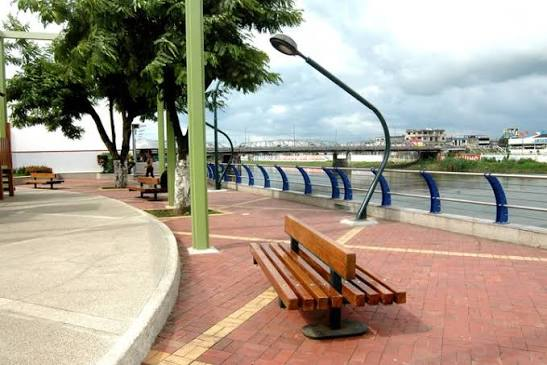
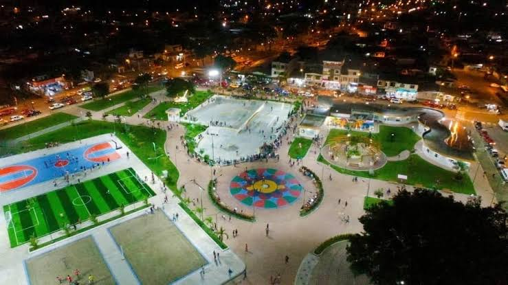
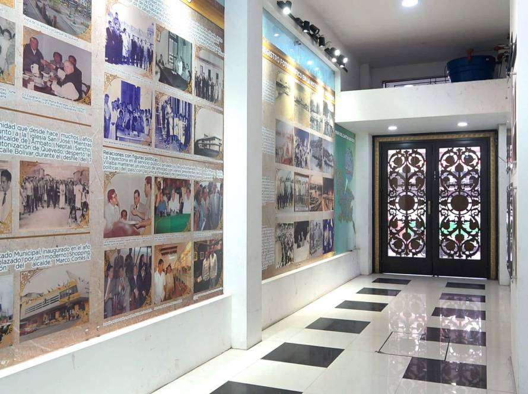
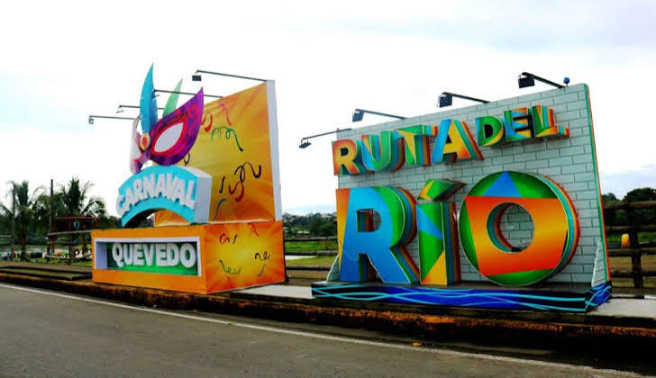
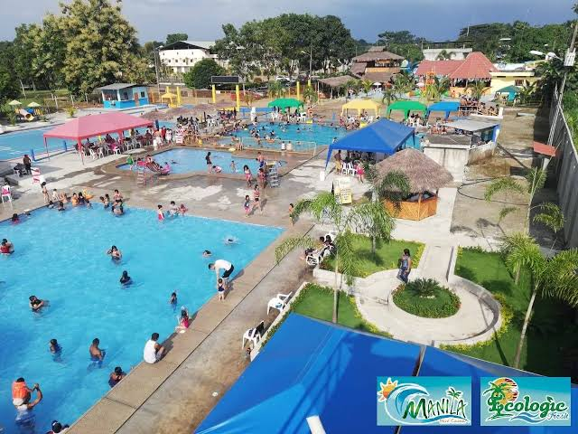
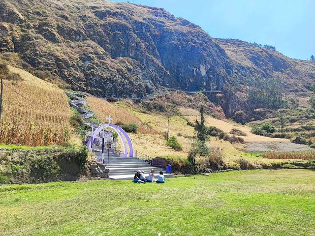
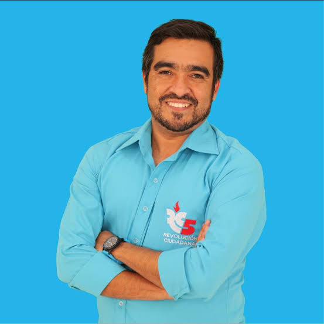
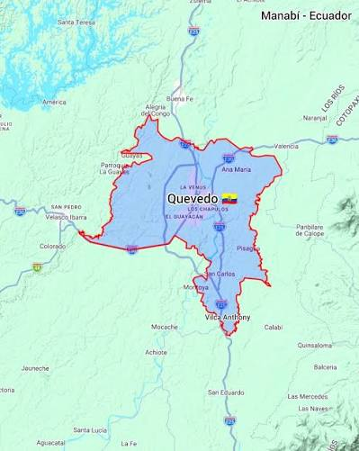

El cantón Quevedo está ubicado en la provincia de Los Ríos, Ecuador. Su nombre se relaciona con el agrimensor Timoteo Quevedo. Fue cantonizado el 7 de octubre de 1943. Se caracteriza por su gran actividad comercial, agrícola y ganadera. Es conocido como la "Capital Económica de Los Ríos" debido a su importancia en el comercio y la producción de banano, cacao, arroz y otros productos agrícolas. Además, cuenta con una importante influencia de la cultura china, que forma parte de su identidad gastronómica y comercial.
El cantón Quevedo está conformado por cinco parroquias:
quevedo.
Encanutado de bocachico.
Bollo de bocachico.
Encebollado.
Caldo de salchicha.
Bolón de verde.
Corviche.
Arroz con menestra y carne asada.
Chaulafán.
Seco de gallina criolla.
Cazuela de pescado.
Es turístico porque permite caminar junto al río, disfrutar del paisaje y compartir en familia.

Es visitado por sus espacios verdes, canchas deportivas, pista de skate y áreas recreativas.

Permite conocer la historia de Quevedo y observar fotografías antiguas y piezas arqueológicas.

Es un espacio recreativo donde se pueden realizar paseos en bote, actividades deportivas y disfrutar de la gastronomía.

Es conocido por sus piscinas y espacios recreativos para disfrutar en familia.

Es atractivo porque ofrece una vista panorámica de la ciudad de Quevedo.


El actual alcalde del cantón Quevedo es el ingeniero Alexis Fernando Matute Matute, quien ejerce sus funciones durante el período 2023-2027. Está encargado de dirigir la administración municipal y promover obras y proyectos para el desarrollo y bienestar de sus habitantes.
Según el Censo de Población y Vivienda de 2022 del INEC, el cantón Quevedo cuenta con 206.008 habitantes, siendo el cantón más poblado de la provincia de Los Ríos.

" width="300" style="display: block; margin: auto; border: 4px solid black; border-radius: 10px; padding: 5px;"> Volver al índice principal